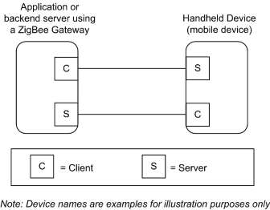
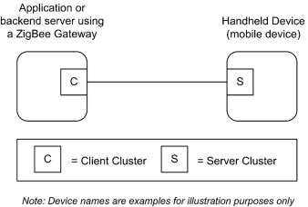
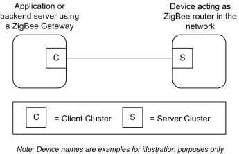
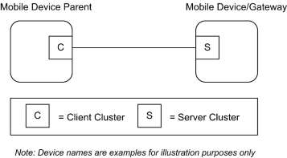

CHAPTER 14 RETAIL
The Cluster Library is made of individual chapters such as this one. See Document Control in the Cluster Library for a list of all chapters and documents. References between chapters are made using a X.Y notation where X is the chapter and Y is the sub-section within that chapter. References to external documents are contained in Chapter 1 and are made using [Rn] notation.
14.1 General Description ¶
14.1.1 Introduction ¶
The clusters specified in this chapter are for use typically in retail applications, but may be used in any application domain.
14.1.2 Cluster List ¶
This section lists the clusters specified in this chapter and gives examples of typical usage for the purpose of clarification.
The clusters specified in this chapter are listed in Table 14-1.
Table 14-1. Clusters Specified in this Chapter ¶
| ID | Cluster Name | Description |
|---|---|---|
| 0x0617 | Retail Tunnel Cluster | Interface for manufacturer specific information to be exchanged |
| 0x0022 | Mobile Device Configuration Clus- ter | Interface to manage mobile devices in a network |
| 0x0023 | Neighbor Cleaning Cluster | Interface to manage mobile devices in a network |
| 0x0024 | Nearest Gateway Cluster | Interface to enable communication of nearest gateway to devices |
14.2 Retail Tunnel (MSP Tunnel) ¶
14.2.1 Overview ¶
Please see Chapter 2 for a general cluster overview defining cluster architecture, revision, classification, identification, etc.
This cluster provides an interface for transferring information encoded through a specific Manufacturer specific Profile from a device (e.g., a backend application using a gateway) to a handheld device (e.g., the Retail HHD). The messages that are transferred use a transfer APDU command as for other tunneling clusters defined (e.g., 11073 Protocol tunnel, or ISO 7818 tunnel).
Figure 14-1. Typical Usage of the Retail Tunnel Cluster ¶

14.2.1.1 Revision History ¶
The global ClusterRevision attribute value SHALL be the highest revision number in the table below.
| Rev | Description |
|---|---|
| 1 | mandatory global ClusterRevision attribute added |
14.2.1.2 Classification ¶
| Hierarchy | Role | PICS Code | Primary Transaction |
|---|---|---|---|
| Base | Application | RTUN | Type 1 (client to server) |
14.2.1.3 Cluster Identifiers ¶
| Identifier | Name |
|---|---|
| 0x0617 | Retail Tunnel |
14.2.2 Server ¶
14.2.2.1 Dependencies ¶
This cluster may leverage on the Partition cluster in order to carry payloads not fitting into a single ZCL payload.
14.2.2.2 Attributes ¶
The currently defined attributes for this cluster are listed in Table 14-2.
Retail
Table 14-2. Attributes of the Retail Tunnel cluster ¶
| Id | Name | Type | Range | Acc | Def | M/O |
|---|---|---|---|---|---|---|
| 0x0000 | ManufacturerCode | uint16 | 0x1000 – 0x10ff | R | - | M |
| 0x0001 | MSProfile | uint16 | 0xC000 – 0xFFFF | R | - | M |
14.2.2.2.1 ManufacturerCode Attribute ¶
The ManufacturerCode attribute specifies the manufacturer code relating the manufacturer of the device. This attribute can be used to match the proper protocol associated to the manufacturer of the device and tunneled through this cluster. See [Z12] Manufacturer Code Database.
14.2.2.2.2 MSProfile Attribute ¶
The MSProfile attribute specifies the manufacturer specific profile used in the tunneled messages carried by the Transfer APDU commands. The MSProfile attribute can be used to have the information of the proper protocol used by the communication entities supporting the MSP Tunnel cluster in order to properly decode the messages tunneled in this cluster.
14.2.2.3 Commands Received ¶
Table 14-3 lists the cluster-specific commands that are received by the server. ¶
Table 14-3. Cluster-specific Commands Received by the Server ¶
| Command identifier field value | Description | Mandatory / Optional |
|---|---|---|
| 0x00 | Transfer APDU | M |
14.2.2.3.1 Transfer APDU Command ¶
14.2.2.3.1.1 Payload Format ¶
The Transfer APDU command shall be formatted as illustrated in Figure 14-2.
Figure 14-2. Format of the Transfer APDU Command ¶
| Bits | Variable |
|---|---|
| Data Type | Octet String |
| Field Name | APDU |
14.2.2.3.1.2 APDU Field ¶
The APDU field is of variable length and is an APDU as defined in the MSProfile attribute of the Manufacturer indicated by the ManufacturerCode attribute.
14.2.2.3.1.3 When Generated ¶
This command is generated when a message has to be transferred across a MSP tunnel. The message can be only decoded by the recipient entity if it is provided by the proper decodes of the Manufacturer specific profile as defined in [Z7].
14.2.2.3.1.4 Effect on Receipt ¶
On receipt of this command, a device shall process the APDU according to the specific MSP transported.
14.2.2.4 Commands Generated ¶
No cluster-specific commands are generated by the server cluster.
14.2.3 Client ¶
The client has no dependencies, no cluster specific attributes.The client does not receive any cluster-specific commands. The client generates the cluster-specific commands detailed in 14.2.2.3.
14.3 Mobile Device Configuration ¶
14.3.1 Overview ¶
Please see Chapter 2 for a general cluster overview defining cluster architecture, revision, classification, identification, etc.
This cluster provides an interface to enable the management of mobile devices in a network.
If a stack supports neighbor entry aging, the mobile device will be able to use this cluster to refresh the information in the parent/neighbor. An application will be also able to configure aging timeout (using the Neighbor cleaning cluster) greater than KeepAliveTime, managing in this way the timeout used for cleaning neighbor table setting appropriate value. Besides, Rejoin timeout can be used to allow the device force a rejoin and then allow the mobile device solution to work with stacks not supporting the cleaning of the neighbor tables.
Retail
Figure 14-3. Typical Usage of the Mobile Device Configuration Cluster ¶

14.3.1.1 Revision History ¶
The global ClusterRevision attribute value SHALL be the highest revision number in the table below.
| Rev | Description |
|---|---|
| 1 | mandatory global ClusterRevision attribute added |
14.3.1.2 Classification ¶
| Hierarchy | Role | PICS Code |
|---|---|---|
| Base | Utility | MOBCFG |
14.3.1.3 Cluster Identifiers ¶
| Identifier | Name |
|---|---|
| 0x0022 | Mobile Device Configuration |
14.3.2 Server ¶
14.3.2.1 Dependencies ¶
This cluster should be supported by devices that are mobile in the network. The devices building the network infrastructure should use the Neighbor Cleaning Cluster to manage the loss of the mobile devices from the radio range.
14.3.2.2 Attributes ¶
The currently defined attributes for this cluster are listed in Table 14-4.
Table 14-4. Attributes of the Mobile Device Cleaning Cluster ¶
| Identifier | Name | Type | Range | Acc | Unit | Default | M/O |
|---|---|---|---|---|---|---|---|
| 0x0000 | KeepAliveTime | uint16 | 0x0001- 0xFFFF | RW | Seconds | 15 seconds (0x000F) | M |
| 0x0001 | RejoinTimeout | uint16 | 0x0000- 0xFFFF | RW | Seconds | 0xFFFF (Never) | M |
14.3.2.2.1 KeepAliveTime Attribute ¶
The KeepAliveTime attribute specifies the time period to elapse before a mobile device send a Keep Alive Notification message to the manager of the network (e.g. application backend servers using a gateway). Please note that a value of this attribute equal to 0xFFFF means that the mobile device shall not send KeepAliveNotification messages. This attribute is used to “refresh” neighbor table information on its parent devices, avoiding expiration or aging of the correspondent entry.
14.3.2.2.2 RejoinTimeout Attribute ¶
The RejoinTimeout attribute specifies the time after which the device shall perform a secure network rejoin to clean the entries in the neighbor table for parent devices not cleaning them with the Neighbor Cleaning Cluster. Please note that a value of this attribute equal to 0xFFFF means that the mobile device is not requested to perform the network Rejoin to clean the mesh. (Note: The mobile device may choose to transmit a Network Leave frame to the short address being cleaned.)
14.3.2.3 Commands Received ¶
No cluster-specific commands are received by the server side of this cluster.
14.3.2.4 Commands Generated ¶
Table 14-5 lists cluster-specific commands that are generated by the server. ¶
Table 14-5. Cluster-specific Commands Generated by the Server ¶
| Command Id | Description | M/O |
|---|---|---|
| 0x00 | Keep Alive Notification | M |
14.3.2.4.1 Keep Alive Notification Command ¶
14.3.2.4.1.1 Payload Format ¶
The Keep Alive Notification command shall be formatted as illustrated in Figure 14-4.
Figure 14-4. Format of the Keep Alive Notification Command ¶
| Bits | Variable | Variable |
|---|---|---|
| Data Type | uint16 | uint16 |
| Field Name | KeepAliveTime | RejoinTimeout |
Retail
14.3.2.4.1.1.1 KeepAliveTime Field ¶
This field corresponds to the KeepAliveTime attribute.
14.3.2.4.1.1.2 RejoinTimeout Field ¶
This field corresponds to the RejoinTimeout attribute.
14.3.2.4.1.2 When Generated ¶
This command is generated when a time greater than KeepAliveTime attribute elapses.
14.3.2.4.1.3 Effect on Receipt ¶
On receipt of this command, a parent or neighbor device shall refresh neighbor table information on the mobile node sending the Keep Alive Notification by resetting the timers managing the expiration of the entries in the neighbors table.
14.3.3 Client ¶
The client has no dependencies, no cluster specific attributes. The client receives the commands specified in section 14.2.2.4. The client does not generate any cluster-specific commands.
14.4 Neighbor Cleaning ¶
14.4.1 Overview ¶
Please see Chapter 2 for a general cluster overview defining cluster architecture, revision, classification, identification, etc.
This cluster provides an interface to enable the management of mobile devices in a network.
If a stack supports neighbor entry aging, the mobile device will be able to use this cluster to clean the information in the parent/neighbor. An application will be able to configure the aging timeout greater than a KeepAliveTime (attribute supported by a mobile device), managing in this way the timeout used for cleaning neighbor table setting appropriate value.
Figure 14-5. Typical Usage of the Neighbor Cleaning Cluster ¶

14.4.1.1 Revision History ¶
The global ClusterRevision attribute value SHALL be the highest revision number in the table below.
| Rev | Description |
|---|---|
| 1 | mandatory global ClusterRevision attribute added |
14.4.1.2 Classification ¶
| Hierarchy | Role | PICS Code |
|---|---|---|
| Base | Utility | NBCLEAN |
14.4.1.3 Cluster Identifiers ¶
| Identifier | Name |
|---|---|
| 0x0023 | Neighbor Cleaning |
14.4.2 Server ¶
14.4.2.1 Dependencies ¶
This cluster should be supported by devices that are acting as routers for Mobile devices in the network; besides, the mobile devices within the network infrastructure (e.g., Hand Held devices or Mobile phones) should use the Mobile Device Configuration Cluster to take advantage of the mobility feature.
14.4.2.2 Attributes ¶
The currently defined attributes for this cluster are listed in the following table.
Retail
Table 14-6. Attributes of the Neighbor Cleaning Cluster ¶
| Id | Name | Type | Range | Acc | Unit | Default | M/O |
|---|---|---|---|---|---|---|---|
| 0x0000 | NeighborCleaningTimeout | uint16 | 0x0001 - 0xFFFF | RW | Seconds | 30 seconds (0x001E) | M |
14.4.2.2.1 NeighborCleaningTimeout Attribute ¶
The NeighborCleaningTimeout attribute specifies the time period to elapse without receiving any messages from a neighbor device (router or end device) which is a mobile device, before cleaning its neighbor table entry. (Note: The cleaning device may choose to transmit a Network Leave frame to the short address being cleaned.)
14.4.2.3 Commands Received ¶
Table 14-7 lists cluster-specific commands which are received by the server side of this cluster. ¶
Table 14-7. Cluster-specific Commands Generated by the Server ¶
| Command Id | Description | M/O |
|---|---|---|
| 0x00 | PurgeEntries | M |
14.4.2.3.1 PurgeEntries Command ¶
14.4.2.3.1.1 Payload Format ¶
The PurgeEntries command has no payload.
14.4.2.3.1.2 When Generated ¶
This command is generated by the manager of the network supporting the mobile devices in order to force the cleaning of the neighbor table entries.
14.4.2.3.1.3 Effect on Receipt ¶
On receipt of this command, a parent or neighbor device should clean the neighbor tables to delete aged entries; please notice that this feature can be executed only if enabled by the stack.
14.4.2.4 Commands Generated ¶
No cluster-specific commands are generated by the server.
14.4.3 Client ¶
The client has no dependencies and no cluster specific attributes. The client does not receive any clusterspecific commands. The client does generate the cluster-specific commands specified in 14.4.2.3.
14.5 Nearest Gateway ¶
14.5.1 Overview ¶
Please see Chapter 2 for a general cluster overview defining cluster architecture, revision, classification, identification, etc.
This cluster provides an interface to enable the dissemination of “nearest gateway” information.
Based on MTORR information initiated by gateway devices (concentrator), the remaining routers in the network can determine which gateway is closest based on path cost, i.e., the “nearest gateway.” The cluster allows that information to be communicated to devices in the network that need that information.
Figure 14-6. Typical Usage of the Nearest Gateway Cluster ¶

14.5.1.1 Revision History ¶
The global ClusterRevision attribute value SHALL be the highest revision number in the table below.
| Rev | Description |
|---|---|
| 1 | mandatory global ClusterRevision attribute added |
14.5.1.2 Classification ¶
| Hierarchy | Role | PICS Code |
|---|---|---|
| Base | Utility | NEARGW |
14.5.1.3 Cluster Identifiers ¶
| Identifier | Name |
|---|---|
| 0x0024 | Nearest Gateway |
Retail
14.5.2 Server ¶
14.5.2.1 Dependencies ¶
This cluster should be supported by devices that are mobile in the network and, optionally, gateway devices.
14.5.2.2 Attributes ¶
The currently defined attributes for this cluster are listed in the following table.
Table 14-8. Attributes of the Nearest Gateway Cluster ¶
| Id | Name | Type | Range | Acc | Default | M/O |
|---|---|---|---|---|---|---|
| 0x0000 | Nearest Gateway | 16-bit NWK address | 0x0000- 0xFFF8 | RW | 0x0000 | M |
| 0x0001 | New Mobile Node | 16-bit NWK address | 0x0000- 0xFFF8 | W | 0x0000 | M |
14.5.2.2.1 Nearest Gateway Attribute ¶
The Nearest Gateway attribute specifies the gateway that is nearest in terms of path cost.
14.5.2.2.2 New Mobile Node Attribute ¶
The New Mobile Node attribute specifies the new mobile node that joined the server.
14.5.2.3 Commands Received ¶
No cluster-specific commands are received by the server side of this cluster.
14.5.2.4 Commands Generated ¶
No cluster-specific commands are generated by the server side of this cluster.
14.5.3 Client ¶
The client has no dependencies and no cluster specific attributes. The client does not receive nor generate any cluster-specific commands.
14.5.4 Examples of Use ¶
Figure 14-7 describes an example of the possible use of the nearest gateway cluster. ¶
Figure 14-7. Sequence Diagram ¶
Gateway Mobile Device
Mobile Device Parent
MTORR
The Parent set the nearest gateway from the received many to one route requests (MTORRs) from concentrators. When router devices that are within the MTORR radius receive the requests they know the path cost from the gateway that initiated the MTORR to themselves. Nearest gateway (in term of path cost) can then be selected Device Announce
The Parent receives the annoucement of new mobile node rejoining; it writes the Nearest Gateway attribute on the Mobile Device so it can use the proper address to communicate with the nearest gateway.
Write New Mobile Node Attribute Write Nearest Gateway Attribute
The Mobile Device sets the address of the gateway to the updated value
The Gateway receives Short address of mobile node. of the Nearest Gateway Attribute
The information can be forwarded to the Retail Server. set by the parent
| Mobile Device receive | s message from gateway |
|---|
Mobile Device sends message to gateway